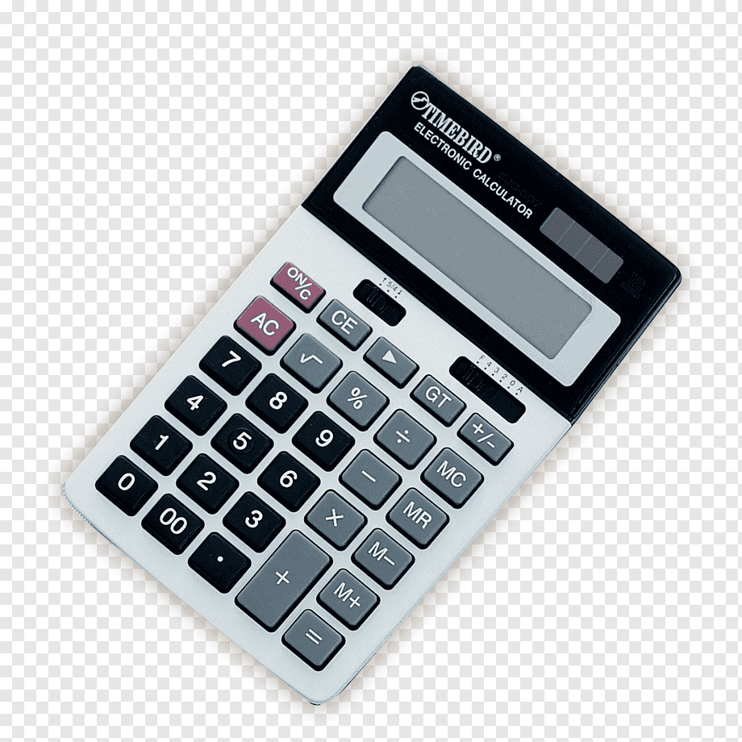

case study between google lens and mobilenet
- Test image-
Output on GOOGLE LENS- bottle
Output on MOBILENET MODEL- vase
RESULT- google lens is more accurate
- Test image- 
Output on GOOGLE LENS- claculator
Output on MOBILENET MODEL- cellphone
RESULT- google lens is more accurate
- Test image-
Output on GOOGLE LENS- curtain
Output on MOBILENET MODEL- shower curtain
RESULT- google lens is more accurate
- Test image-
Output on GOOGLE LENS- shovel
Output on MOBILENET MODEL- hammer
RESULT- mobilenet is more accurate
-
Test image-